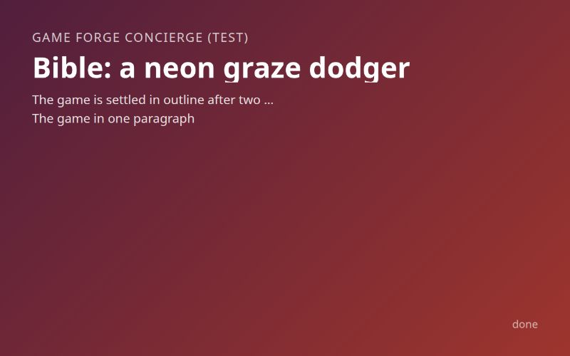

Inputs
- Samples per round
- 3
Starred outputs
Bible · biblemd
The bible: the game in collegial prose, every decision, every sample linked, the Game forge values
Bible: a neon graze dodger
The game is settled in outline after two rounds. Round 2 asked for two last samples, a blended sketch to check the run shape and a mock of the neon HUD and title. Both were built, but the user has not yet played or reacted to either, so their results may still adjust the arrival times and the palette. Nothing below waits on them to be buildable.
The game in one paragraph
This is a tense, twitchy survival dodger in a tiny neon arena. The player is a small bright dot, and one hit ends the run. Bullets spray in from the edges. Flying close past them without touching, a graze, raises a score multiplier with a brief slow-mo dip and a rising tone, so the player steers into danger on purpose (D4). At about 45 seconds, telegraphed walls with a single gap start sweeping through (D5). At about 90 seconds, chargers wind up and lunge across the arena (D6). Surviving three minutes wins the run, and the score is the rank (D10).
The player fantasy
You are the one who flies closest to death and lives, on purpose and for points. The user steered into bullets to feed the multiplier as soon as the graze sketch gave the chance (D4). The pattern-reader and showman readings became hazards rather than the fantasy (D5, D6).
The pillars
The user confirmed all three pillars as written (D8).
- Danger is the reward. The closer you fly, the more you score, and playing safe bleeds the multiplier away.
- Every death is readable. Walls are outlined before they turn solid, chargers show their aim line before they lunge, and bullets never spawn on top of the player, so the player always sees why they died.
- A run is over before you want it to be. A run lasts three minutes at most, restart is instant, and the next run is one key away.
The loop and the verbs
The loop is move, read, graze, survive, restart. The player moves with keys or by following the mouse, reads the incoming hazards, flies close to graze them, and tries to hold the multiplier while surviving to three minutes. There is no dash and no shooting (D3, D6). Movement is the only verb that touches the world, and the graze turns risk into score.
In MDA terms, three mechanics produce the dynamics: a graze ring that pays only near hazards, a multiplier that decays at 0.5 a second when untouched, and one-hit death. Together they produce deliberate risk-taking and close calls. The aesthetics are sensation first and challenge second.
The screens and the first thirty seconds
The title screen shows the name, a one-line prompt and the controls. In the arena, a HUD shows the run clock counting toward 3:00, the score, the multiplier and the graze count. The game-over or win screen shows the score, grazes, peak multiplier and the best score this session, with instant restart. The r2-neon-hud mock tests this layout.
The first thirty seconds are bullets only, aimed near the player so the first graze comes within a few seconds and teaches that the ring pays. The first spray should be sparse enough that a newcomer survives it while learning to graze.
The look and the sound
The look is neon on black (D9). Hazards glow against a near-black field, and each type has its own colour so it reads at a glance. The palette under test in r2-neon-hud is background #0a0a12, player #f2f2ff, bullets #ff2e88, walls #ff9a1f, chargers #39ff88, and graze ring and HUD accent #29e3ff.
Sound is synthesised with WebAudio and stays silent until the first gesture. A graze plays a short tone whose pitch rises with the multiplier (D9), so a long chain sounds like a climb. Walls keep the click on a slip from the gap sketch. A charger's windup gets a low rising hum, so its threat is heard as well as seen. A hit is a short noise burst, then silence.
The controls
The controls are the Game forge default and were not discussed further: WASD or arrows, or follow the mouse; Enter or click to start; R or click to restart. There is no dash button (D6). Touch is a nice-to-have. On touch, the dot follows the finger at a small offset above it, so the finger does not hide the graze ring.
The audience
The audience is the Game forge default, general, and was not discussed. One hit ends a run for everyone, and the gentle first thirty seconds are the onramp.
The scope and the cuts
The scope is one arena, one loop, and a three-minute run to a win with a score rank (D10), inside the Game forge default scope. These were cut: calm, puzzle and expressive moods (D1); shooters, rhythm and platforming (D2); fighting back (D3); the dash and the crowd and matador fantasy (D6); walls as the core game (D5); and endless mode (D10).
The decisions with their reasons
- D1. The mood is tense and twitchy, chosen over calm, puzzly and expressive moods.
- D2. The genre is a tiny-arena dodger, the kind of game the user has played a lot. It was chosen over bullet-threading shooters, rhythm games and platformers.
- D3. The near miss is the moment the user chased most, over pattern reading, fighting back and beating a best time.
- D4. Grazing for a multiplier leads, because in r1-graze-surge the user found themselves steering into bullets on purpose.
- D5. Telegraphed walls are a hazard wave, not the core. The user thought they worked well as a hazard type alongside grazing.
- D6. Chargers are a hazard wave dodged by movement. The dash and the cheer were left out.
- D7. The graze radius is 22 px. The user picked it on the slider in r1-graze-surge as slightly more forgiving than the 18 start.
- D8. The three pillars hold as written.
- D9. The look is neon on black with a rising tone, chosen over flat pastel with chimes and ink on paper with clicks.
- D10. Hazards arrive on a timer and the run is won at three minutes, chosen over an endless run and a random mix. Bullets come from 0 s, walls join at about 45 s and chargers at about 90 s.
The edges still open
The draft left these open, and the critic's gaps add to them.
- Pacing. Nobody knows yet whether walls at 45 s and chargers at 90 s pace the run well. r2-blended-run tests this with sliders, but the user has not played it. The sketch also ramps the last thirty seconds by about +25% spawn rate, +15% speed and one more charger. That ramp is not a decision yet. The open question is whether the run should end with a hanging-on finale.
- Palette and HUD. We don't know yet whether the neon palette and HUD layout hold up. r2-neon-hud tests this. The mock found pink bullets #ff2e88 and orange walls #ff9a1f the closest pair, though they stayed distinct side by side. The six hex values stay marked as under test until the user sees the mock.
- Warning times. The user has not tuned the telegraph time (600 ms in the sketch) or the charger windup (700 ms). The sketch values stand until then. The open question is whether both give enough warning to keep every death readable.
- What counts as a graze. Should grazing a wall edge or a lunging charger also feed the multiplier? The sensible default is yes, at the same 22 px radius. r2-blended-run already pays for charger grazes and for wall edge-slips within 7 px, but the user has not picked this.
- Scoring and rank. The bible names a score rank but no rank letters, thresholds or multiplier cap. The sketch uses a cap of x16 and guessed thresholds of S 50000, A 25000 and B 10000. A random-walk run sat at the x16 cap and scored about 94000, so the cap or the decay may be too generous at 22 px. The open questions are what the cap should be and whether the rank should be letters (S/A/B/C) set where a good run lands.
- The name. The game has no name yet. The mock uses the placeholder GRAZE.
- Defaults nobody asked about. Controls, audience and ship-score stay at the defaults. Nobody has asked whether touch should be a must, whether the game is for a general audience or players who already know dodgers, or whether 80 is the right bar to ship at.
Wishes beyond what Game forge builds today
The user raised no wishes. An online leaderboard would be the natural next one. Game forge cannot build it because it has no server and no persistence, and a best score for the current session is the closest it can get.
The samples
- Graze surge shows bullets in sprays and a faint ring, with grazes feeding a multiplier through slow-mo, a spark and a rising tone. The user steered into bullets on purpose and settled the graze radius at 22 px. This sketch became the core.
- Gap reader shows dashed-outline walls that turn solid and sweep in with one gap, speeding up over two minutes. The user called it good as a hazard type, and walls join at about 45 s.
- Matador dash shows a bullring of crowd dots, chargers on locked aim lines, and a last-instant dash judged against a perfect window. The user kept the chargers as a hazard and left the dash out.
- Blended run was requested in round 2. It puts all three hazard waves on a three-minute clock at a 22 px graze, in the neon palette, with sliders for grazeRadiusPx 22, wallsAtSec 45, chargersAtSec 90 and runLengthSec 180. A win screen reads "YOU SURVIVED" with a rank letter. The user has not played it yet.
- Neon HUD and title was requested in round 2. It shows the title, with the placeholder name GRAZE, and the in-run HUD in the neon palette: score top left, run clock with 45 s and 90 s arrival marks top centre, multiplier top right, and grazes bottom left. The user has not seen it yet.
The Game forge values
Paste these in as the start variables.
- concept: A tense, twitchy neon survival dodger in a tiny arena. One hit ends the run. Flying close past hazards without touching them (a graze, inside a 22 px ring) raises a score multiplier with a brief slow-mo dip and a tone that rises with the multiplier; the multiplier decays at 0.5 per second when you play safe. Bullet sprays from the start, telegraphed walls with one gap join at 45 s, winding-up chargers that lunge across the arena join at 90 s, dodged by movement only with no dash. Surviving 3 minutes wins; the score ranks the run. Pillars: danger is the reward; every death is readable; a run is over before you want it to be.
- scope: A single arena with one core loop, a 3-minute run to a win with a score rank. A title screen, a HUD with run clock, score, multiplier and grazes, and a game-over or win screen with best this session and instant restart.
- controls: Game forge default. Keyboard and mouse on desktop, touch as a nice-to-have. Not discussed; no dash button.
- audience: Game forge default. General. Not discussed.
- style: Neon on black, with glowing hazards. Palette #0a0a12 background, #f2f2ff player, #ff2e88 bullets, #ff9a1f walls, #39ff88 chargers, #29e3ff graze ring and HUD accent. WebAudio synth sound with a rising graze tone.
- ship-score: Game forge default. 80. Not discussed.
Questions and answers
-
Conversation asked · answered ·
Let's find a small browser game worth building, one you can play through in two to five minutes. What are you in the mood to make?
Tense and twitchy
-
Conversation asked · answered ·
Think of a tense, twitchy game you've actually played a lot. What were you doing in it that kept you going one more run?
Dodging in a tiny arena
-
Conversation asked · answered ·
In those tiny-arena dodge games, which moment did you chase most?
The near miss
-
Conversation asked · answered ·
I'll have three playable sketches built next, all tiny-arena dodgers built around the near miss but each chasing a different feeling: (1) Graze surge, where brushing past bullets charges your score multiplier with slow-mo and shake, pure sensation; (2) Gap reader, where telegraphed walls close in and you find the one gap, a reading challenge; (3) Matador dash, where chargers lunge and a last-instant dash past them earns a cheer, a showman fantasy. How shall we go on?
Build the three sketches
-
Conversation asked · answered ·
Open Graze surge in a new tab and play a few runs: http://localhost:4810/api/runs/6ff46294-7e16-4648-88fc-c85825780091/files/stages/sketches/outputs/sketches/r1-graze-surge/index.html. Bullets that pass inside the faint ring raise a multiplier, with a slow-mo dip and a rising tone. What did it make you do?
Steered into bullets
-
Conversation asked · answered ·
Now Gap reader: http://localhost:4810/api/runs/6ff46294-7e16-4648-88fc-c85825780091/files/stages/sketches/outputs/sketches/r1-gap-reader/index.html. Walls show a dashed outline first, then sweep in with one gap. Compared with Graze surge, where you steered into bullets, how did it feel?
Good as a hazard type
-
Conversation asked · answered ·
And Matador dash: http://localhost:4810/api/runs/6ff46294-7e16-4648-88fc-c85825780091/files/stages/sketches/outputs/sketches/r1-matador-dash/index.html. Chargers wind up and lunge; a dash at the last instant earns a crowd cheer. Against Graze surge, which you steered into, what should the dash be?
Chargers as a hazard
-
Conversation asked · answered ·
In Graze surge, move the grazeRadiusPx slider under the canvas (starts at 18, range 6 to 40) and play a run at a couple of settings. Which width felt right for steering into bullets?
22 px felt right
-
Conversation asked · answered ·
Here are draft pillars for a graze game where walls and chargers arrive as hazard waves: (A) Danger is the reward: the closer you fly, the more you score. (B) Every death is readable: you always see why you died. (C) A run is over before you want it to be: instant restart, two to five minutes. Which set holds?
All three hold
-
Conversation asked · answered ·
The sketches used a dark arena with pink bullets and orange walls. For the real game, which look and near-miss sound fits a graze dodger best?
Neon on black, rising tone
-
Conversation asked · answered ·
How should pressure build across a run of bullets, then walls (as in Gap reader), then chargers (as in Matador dash)?
Timed arrivals, 3-min win
-
Conversation asked · answered ·
The game is now settled in outline: a neon graze dodger with a 22 px graze ring, walls joining at about 45 s and chargers at about 90 s, and a win for surviving 3 minutes. Controls, audience and ship-score would stay at the Game forge defaults (keyboard and mouse, general audience, 80). How shall we finish?
One more sketch first, plus a mock of the neon HUD and title screen so I can see the palette
-
Confirm asked · answered ·
Start Game forge now? Bible: http://localhost:4810/api/runs/6ff46294-7e16-4648-88fc-c85825780091/files/stages/bible/outputs/bible.md Game forge values: concept: A tense, twitchy neon survival dodger in a tiny arena. One hit ends the run. Grazing hazards inside a 22 px ring raises a score multiplier (slow-mo dip, rising tone, decays 0.5/s). Bullets from the start, telegraphed walls with one gap at 45 s, winding-up chargers at 90 s, movement only, no dash. Surviving 3 minutes wins; score ranks the run. scope: A single arena, one core loop, a 3-minute run to a win with a score rank. Title screen, HUD (clock, score, multiplier, grazes), game-over/win screen with best this session and instant restart. controls: Game forge default. Keyboard and mouse on desktop, touch nice-to-have. No dash button. audience: Game forge default. General. style: Neon on black, glowing hazards. #0a0a12 background, #f2f2ff player, #ff2e88 bullets, #ff9a1f walls, #39ff88 chargers, #29e3ff graze ring and HUD. WebAudio synth with a rising graze tone. ship-score: Game forge default. 80.
Start Game forge now
Other outputs
- Conversation · requests.json 1.7KB
- Conversation · bible-draft.md 8.7KB
- Conversation · decisions.md 3.5KB
- Mocks · mocks.dir 4.1KB
- Mocks · mocks-report.md 1.8KB
- Sketches · sketches.dir 4.1KB
- Sketches · sketches-report.md 5.6KB
- Diagrams · diagrams.dir (absent)
- Diagrams · diagrams-report.md (absent)
- Critic · gaps.md 2.6KB
- Critic · done.md (absent)
- Bible · forge-values.json 1.5KB
- Confirm · confirm.md 25B
- Start Game forge · handoff.md 2.2KB
- Park the handoff · handoff.md (absent)
| Stage | Group | Status | Model | Duration | Tokens |
|---|---|---|---|---|---|
| Conversation | talk | done | opus | 2 min 56 s | 875K |
| Mocks | samples | done | sonnet | 52 s | 262K |
| Sketches | samples | done | sonnet | 2 min 00 s | 1.7M |
| Diagrams | samples | skipped | sonnet | 0 s | 0 |
| Critic | review | done | opus | 40 s | 395K |
| Bible | write | done | opus | 50 s | 165K |
| Confirm | confirm | done | sonnet | 35 s | 138K |
| Start Game forge | launch | done | script | 1 s | 0 |
| Park the handoff | launch | skipped | script | 0 s | 0 |